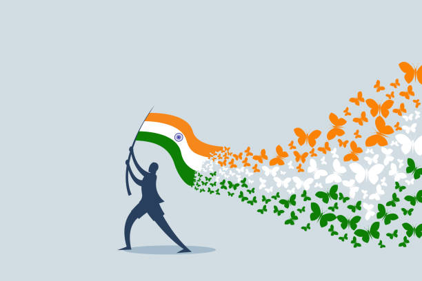
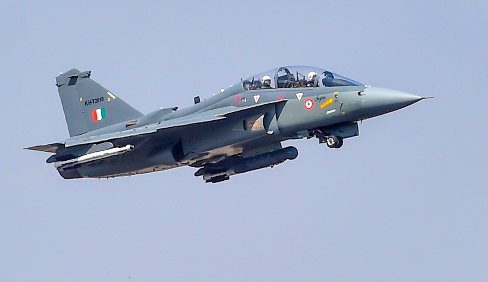
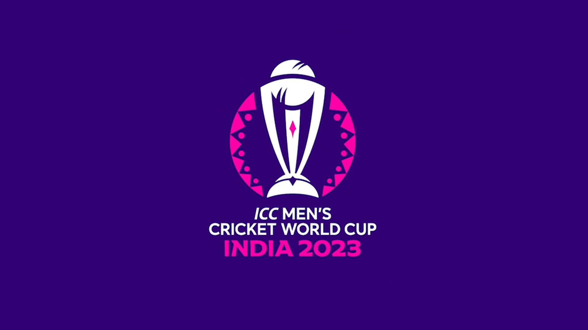

Important Days & Dates of January 2023


| Dates |
Events |
| 9th August |
Quit India Movement |
| 15th August |
Independence Day |
| 5th September |
Teacher's Day |
| 27th September |
World Tourism Day |
| 8th October |
Air Force Day |
| 14th November |
Children's Day |
| 1st December |
World Aid's Day |
Firefly Kothaligad Night Trek | Mumbai Mountain Hikers
Firefly, every year before monsoon we celebrate firefly festival. End of May and start of June fire fly are started to visible. There some location in Maharshtra Firefly are spotted and huge amount of people use to go for Firefly. Fire Fly belong to the Lampyridae family of insects. They have soft body. The female fly attract to Male fly for matting that is why they produce light.
Kothligad is small Fort of Maharashtra. Kothaligad is also known as Peth. Kothaligad height is 3100ft. Kothaligad is situated in east of Karjat on the road of Karjat-Murbad. Kothaligad was use as a Lighthouse. From the Kothaligad the Direction was given about enemy. In fact we can say Kothaligad also use as watch tower to keep eye on Mawal area in the Kingdom of Maratha.
There is a small temple and large cave at the base and a chimney like tunnel to the top of the fort. This pinnacle is carved from inside forming a staircase reaching the top. There is a tank of water (rock cut water cistern) at some distance from the cave and another one at the top of the fort. The stone is a single black expanse reaching till the Peth village standing on the fertile soil with abundant natural resources for water and farming. The cave and the temple carvings date back to the 13th century. Not much is known about the history until the 18th century.
In 1684 Aurangjeb sent Abdul Kadir and AlaiBiradkar to capture this fort. After a small skirmish, the fort was captured by Abdul Kadir. Aurangjeb honored Abdul Kadir and renamed this fort as Miftah-ul-Fateh (Key to success). Then later on, on 2 November 1817, it was recaptured by the Marathas under the leadership of Bapurao who was general of Bajirao Peshwa.
World Cup 2023: India vs Pakistan faceoff on 15 October, final to be played at Narendra Modi Stadium.
The high-voltage encounter between India and Pakistan is set to take place on 15 October 2023 at the Narendra Modi Stadium in Ahmedabad. The match will be part of the ODI World Cup which is scheduled to take place in India in October and November 2023. Cricket fans are excited to see the ultimate faceoff between the two teams.
2023 Cricket World Cup

The 2023 ICC Men's Cricket World Cup will be the 13th edition of the Cricket World Cup, a quadrennial One Day International (ODI) cricket tournament contested by men's national teams and organised by the International Cricket Council (ICC). It is scheduled to be hosted by India in October and November 2023.
The tournament will be contested by 10 teams; England are the defending champions, having won the previous edition in 2019. It will be the first men's Cricket World Cup to be hosted solely by India, after having previously co-hosted the 1987, 1996, and 2011 tournaments with other countries on the Indian subcontinent.
50% of work on Ayodhya Ram Mandir completed:
CM Yogi Adityanath
Uttar Pradesh Chief Minister Yogi Adityanath, who attended a programme at Shri Panchkhand Peeth in Rajasthan on October 06, said over 50 per cent of work on the under-construction Ram Mandir in Ayodhya had been completed. Addressing the programme at Shri Panchkhand Peeth, Rajasthan, CM Yogi said, "Dedicated efforts were made to realise the dream of Ram